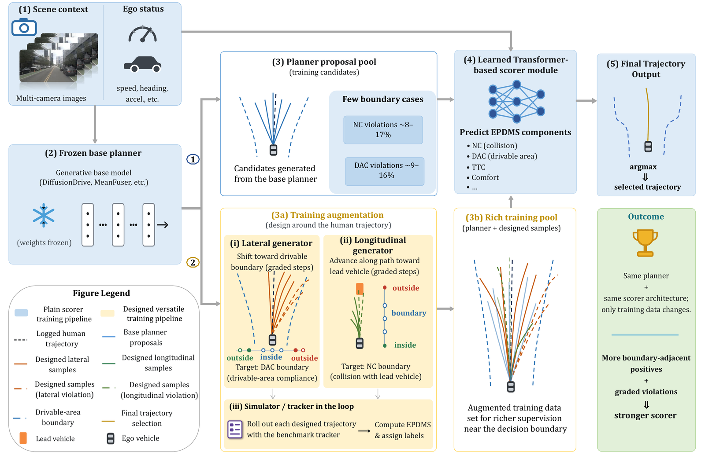
Yaguang Li, Jiaru Zhang, Chuheng Wei, Can Cui, Ziran Wang IEEE/CVF Winter Conference on Applications of Computer Vision (WACV), 2027 [Paper]
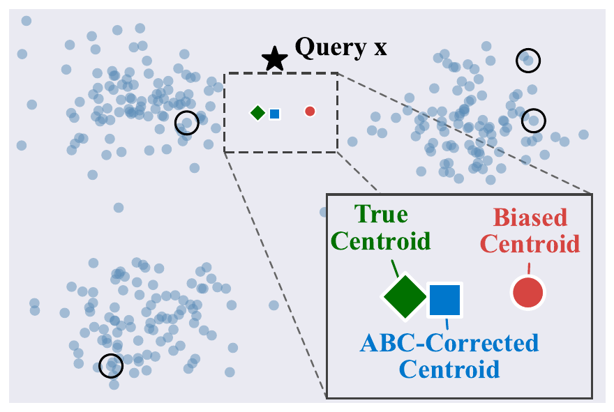
Jiaru Zhang, Zeyun Deng, Juanwu Lu, Ziran Wang, Ruqi Zhang Conference on Neural Information Processing Systems (NeurIPS), 2026 [Paper]
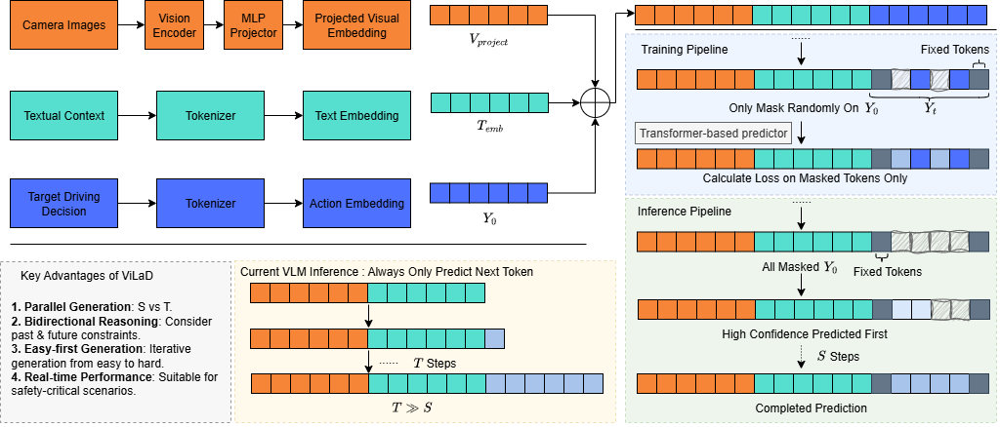
Can Cui, Jiaru Zhang, Yupeng Zhou, Juntong Peng, Sung-Yeon Park, Zichong Yang, Prashanth Sankaranarayanan, Ruqi Zhang, Ziran Wang IEEE/RSJ International Conference on Intelligent Robots and Systems (IROS), 2026 [Paper]
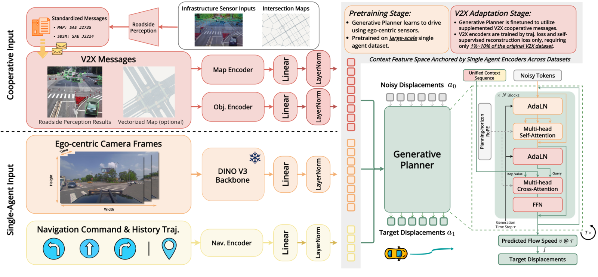
Juntong Peng, Juanwu Lu, Yupeng Zhou, Can Cui, Yaobin Chen, Ziran Wang IEEE/RSJ International Conference on Intelligent Robots and Systems (IROS), 2026 [Paper]
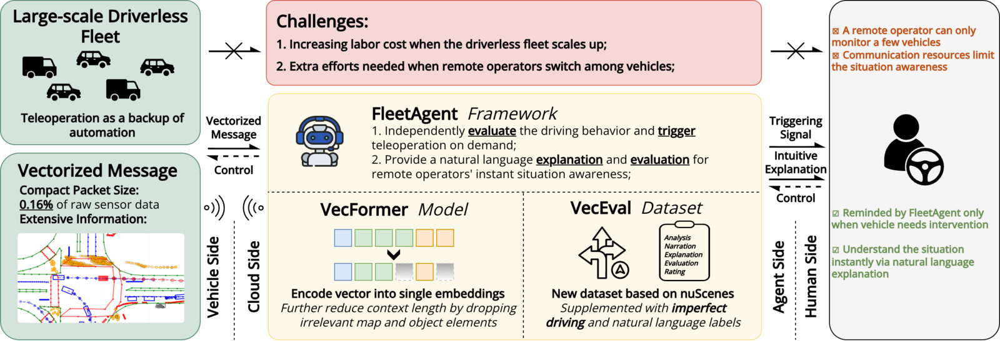
Juntong Peng, Qi Chen, Deyuan Qu, Takayuki Shimizu, Yaobin Chen, Ziran Wang IEEE/RSJ International Conference on Intelligent Robots and Systems (IROS), 2026 [Paper]
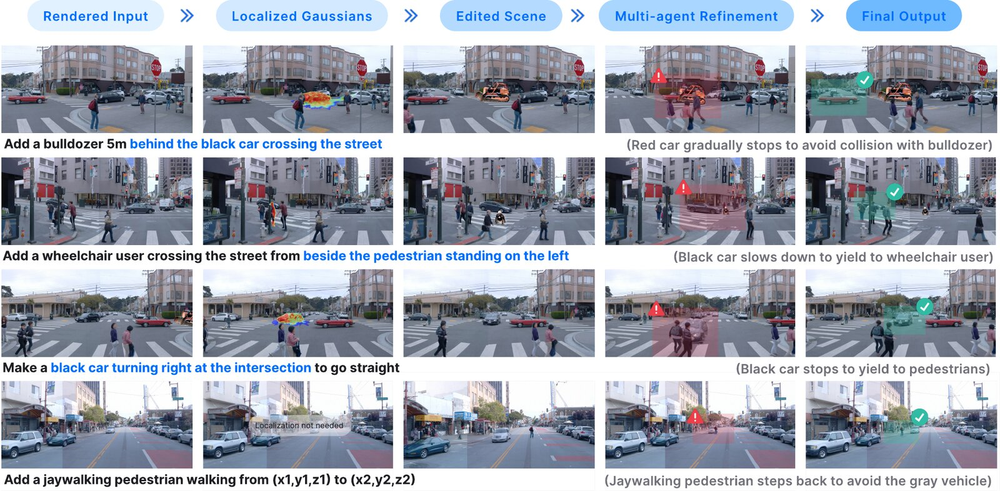
Sung-Yeon Park, Adam Lee, Juanwu Lu, Can Cui, Luyang Jiang, Rohit Gupta, Kyungtae Han, Ahmadreza Moradipari, Ziran Wang European Conference on Computer Vision (ECCV), 2026 [Paper]
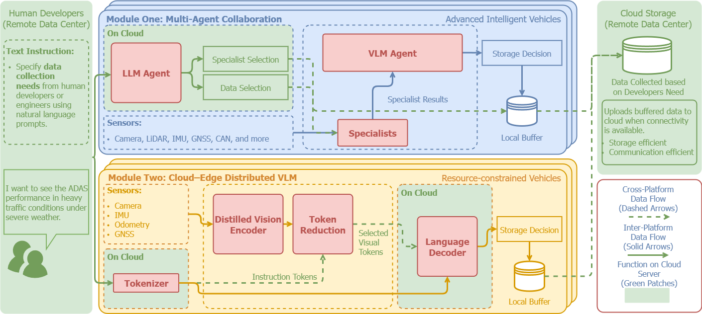
Can Cui*, Juntong Peng*, Sung-Yeon Park, Yongkang Liu, Seyhan Ucar, Satoshi Kitai, Ahmadreza Moradipari, Maryam Khabazi, Ziran Wang IEEE Internet of Things Journal, 2026 [Paper]
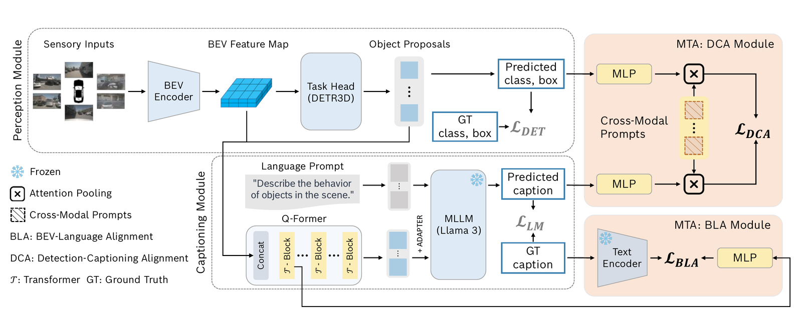
Yunsheng Ma, Burhaneddin Yaman, Xin Ye, Jingru Luo, Feng Tao, Abhirup Mallik, Ziran Wang, Liu Ren IEEE/CVF Conference on Computer Vision and Pattern Recognition (CVPR), 2026 [Paper]
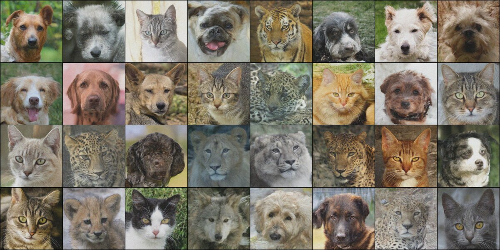
Jiaru Zhang, Juanwu Lu, Xiaoyu Wu, Ziran Wang, Ruqi Zhang Transactions on Machine Learning Research (TMLR), 2026 [Paper]
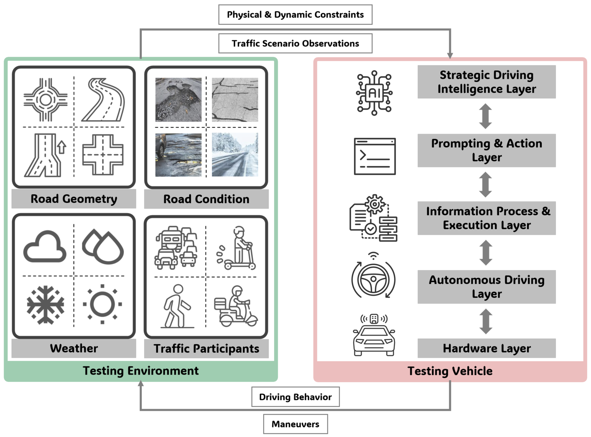
Yupeng Zhou, Can Cui, Juntong Peng, Zichong Yang, Juanwu Lu, Jitesh Panchal, Bin Yao, Ziran Wang ACM Transactions on Internet of Things, 2026 [Paper]
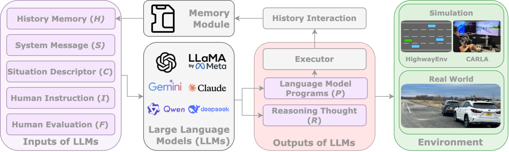
Can Cui*, Yunsheng Ma*, Sung-Yeon Park, Zichong Yang, Yupeng Zhou, Peiran Liu, Juanwu Lu, Juntong Peng, Jiaru Zhang, Ruqi Zhang, Lingxi Li, Yaobin Chen, Jitesh H. Panchal, Amr Abdelraouf, Rohit Gupta, Kyungtae Han, Ziran Wang Proceedings of the IEEE, 2026 [Paper]
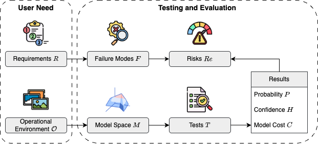
Zichong Yang, Jitesh H. Panchal, Ziran Wang IEEE International Conference on Intelligent Transportation Systems (ITSC), 2025 [Paper]
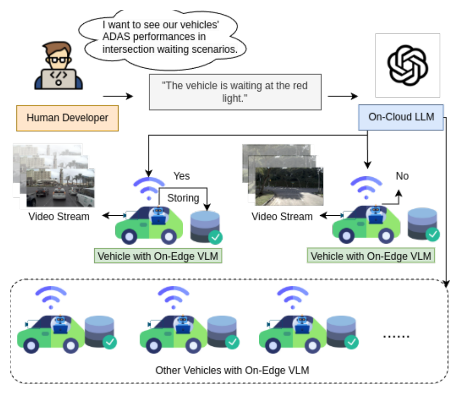
Can Cui, Yongkang Liu, Seyhan Ucar, Juntong Peng, Ahmadreza Moradipari, Maryam Khabazi, Ziran Wang The Conference on Empirical Methods in Natural Language Processing (EMNLP), Industry Track, 2025 [Paper]
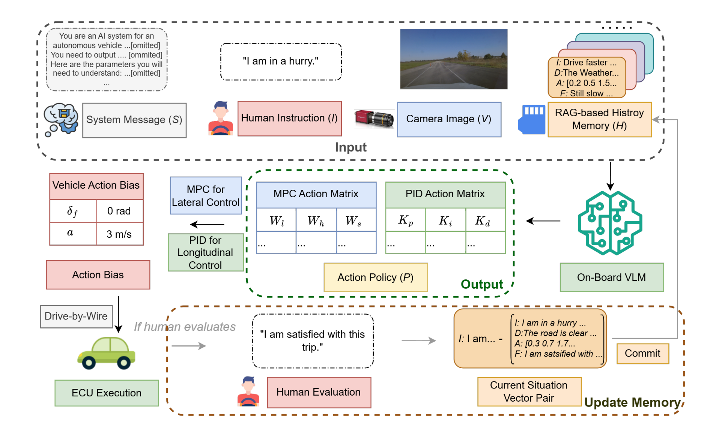
Can Cui, Zichong Yang, Yupeng Zhou, Juntong Peng, Sung-Yeon Park, Cong Zhang, Yunsheng Ma, Xu Cao, Wenqian Ye, Yiheng Feng, Jitesh Panchal, Lingxi Li, Yaobin Chen, Ziran Wang 2025 IEEE/RSJ International Conference on Intelligent Robots and Systems (IROS), 2025 [Paper]
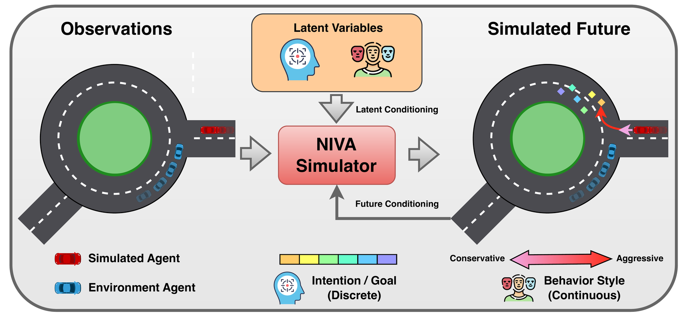
Juanwu Lu, Rohit Gupta, Ahmadreza Moradipari, Kyungtae Han, Ruqi Zhang, Ziran Wang IEEE/RSJ International Conference on Intelligent Robots and Systems (IROS), 2025 [Paper]
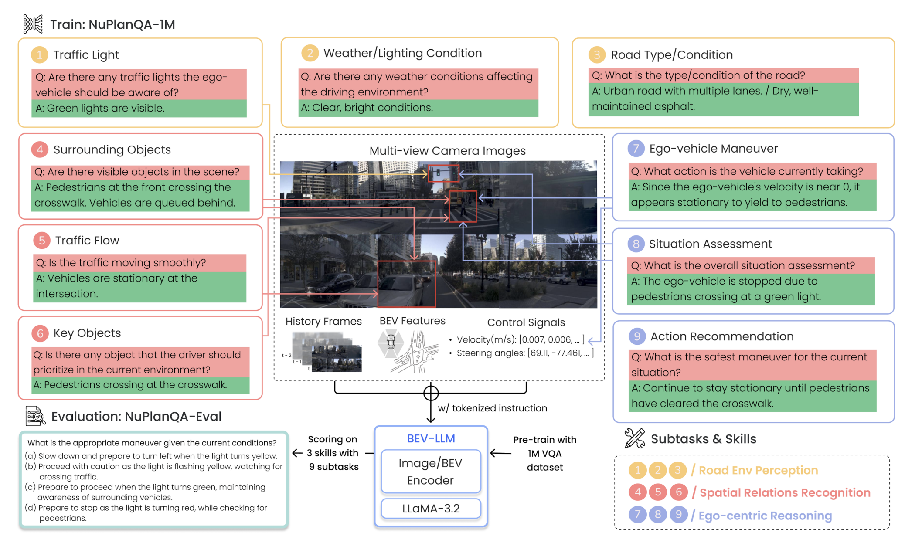
Sung-Yeon Park, Can Cui, Yunsheng Ma, Ahmadreza Moradipari, Rohit Gupta, Kyungtae Han, Ziran Wang International Conference on Computer Vision, ICCV, 2025 [Paper]
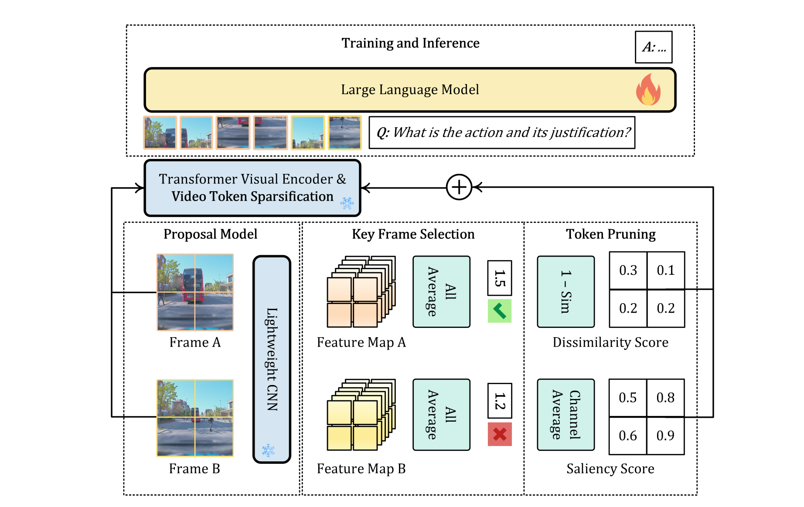
Yunsheng Ma, Amr Abdelraouf, Rohit Gupta, Ziran Wang, Kyungtae Han IEEE Intelligent Vehicles Symposium (IV), 2025 [Paper]
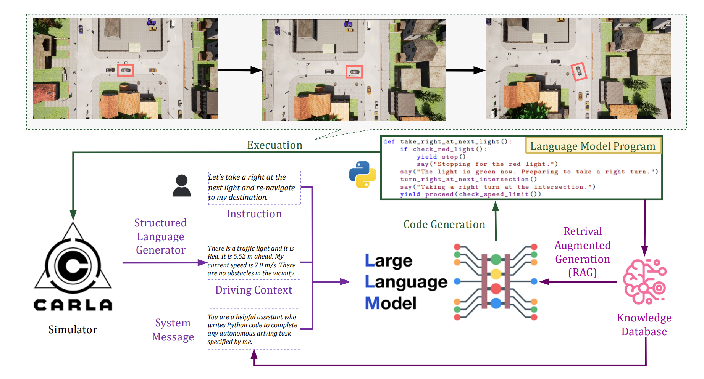
Yunsheng Ma, Xu Cao, Wenqian Ye, Can Cui, Kai Mei, Ziran Wang The Conference on Empirical Methods in Natural Language Processing (EMNLP), 2024 [Paper]
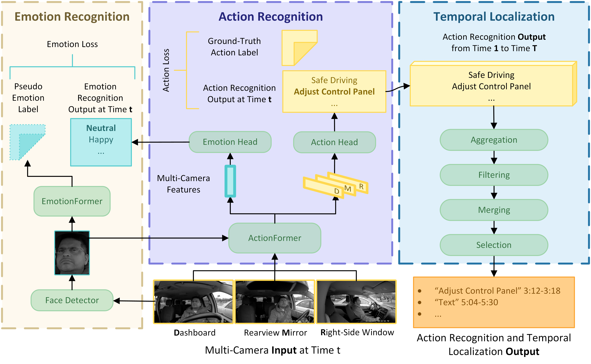
Yunsheng Ma, Runjia Du, Amr Abdelraouf, Kyungtae Han, Rohit Gupta, Ziran Wang IEEE Transactions on Intelligent Vehicles [Paper]
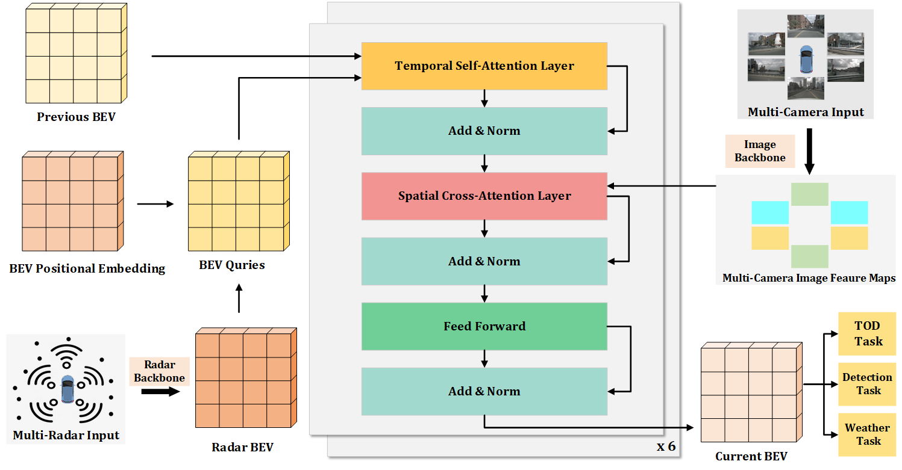
Can Cui*, Yunsheng Ma*, Xu Cao*, Wenqian Ye*, Yang Zhou, Kaizhao Liang, Jintai Chen, Juanwu Lu, Zichong Yang, Kuei-Da Liao, Tianren Gao, Erlong Li, Kun Tang, Zhipeng Cao, Tong Zhou, Ao Liu, Xinrui Yan, Shuqi Mei, Jianguo Cao, Ziran Wang, Chao Zheng Winter Conference on Applications of Computer Vision (WACV) Workshops, 2024 [Paper]
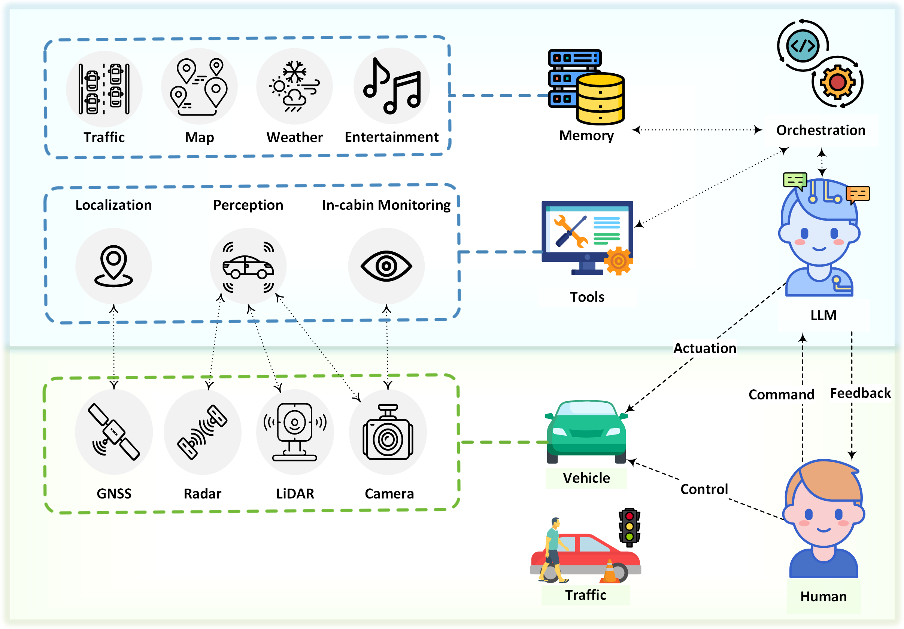
Can Cui, Yunsheng Ma, Xu Cao, Wenqian Ye, Ziran Wang Winter Conference on Applications of Computer Vision (WACV) Workshops, 2024 [Paper]
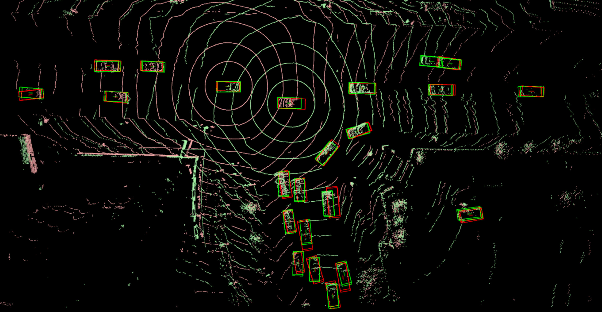
Yunsheng Ma*, Juanwu Lu*, Can Cui, Sicheng Zhao, Xu Cao, Wenqian Ye, Ziran Wang Winter Conference on Applications of Computer Vision (WACV), 2024 [Paper]
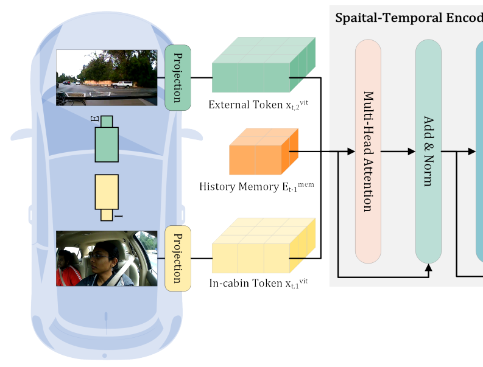
Yunsheng Ma, Wenqian Ye, Xu Cao, Amr Abdelraouf, Kyungtae Han, Rohit Gupta, Ziran Wang; IEEE International Conference on Intelligent Transportation Systems (ITSC), 2023 [Paper]
Chellapandi, Vishnu Pandi, Liangqi Yuan, Stanislaw H. Zak, Ziran Wang; IEEE International Conference on Intelligent Transportation Systems (ITSC), 2023 [Paper]
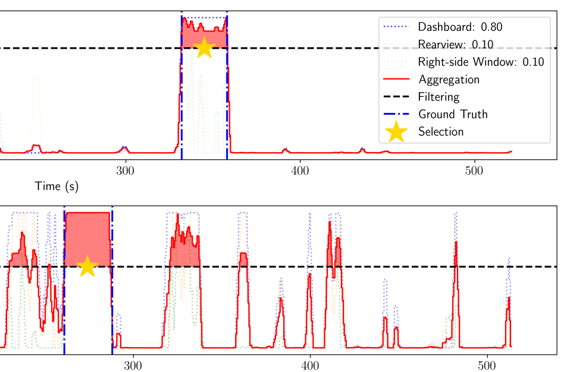
Yunsheng Ma, Liangqi Yuan, Amr Abdelraouf, Kyungtae Han, Rohit Gupta, Zihao Li, Ziran Wang; Proceedings of the IEEE/CVF Conference on Computer Vision and Pattern Recognition (CVPR) Workshops, 2023, pp. 5286-5293 [Paper] [Code]
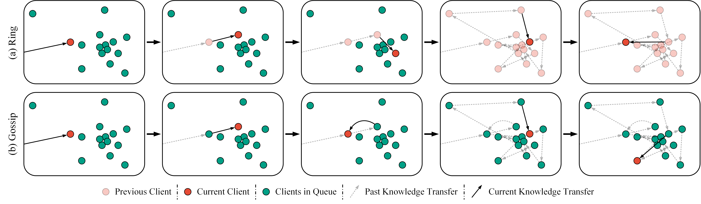
Liangqi Yuan, Yunsheng Ma, Lu Su, Ziran Wang; Proceedings of the IEEE/CVF Conference on Computer Vision and Pattern Recognition (CVPR) Workshops, 2023, pp. 5249-5258 [Paper]